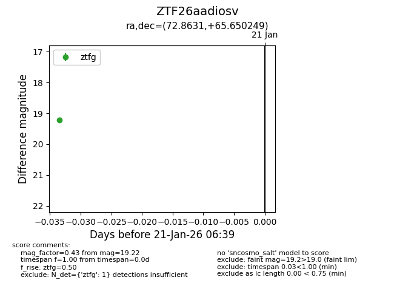
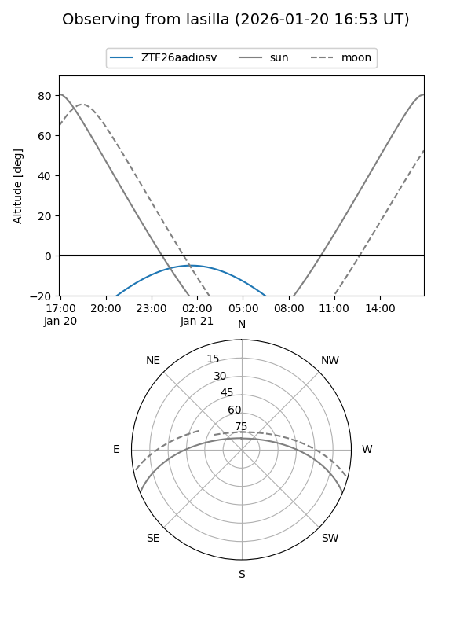
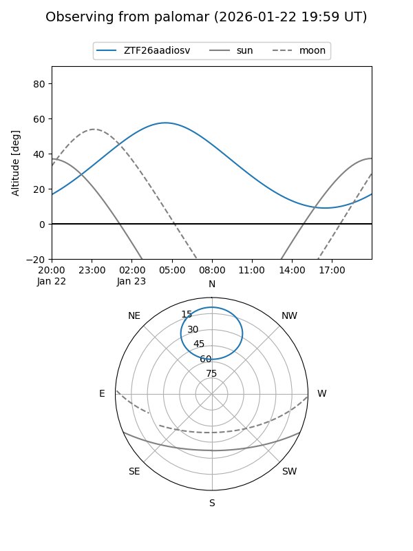

ZTF26aadiosv
Target ZTF26aadiosv at 2026-01-23 06:41
Aliases and brokers:
FINK: link
Lasair: link
ALeRCE: link
alt names
ZTF26aadiosv (ztf,fink_ztf)
Coordinates:
equatorial (ra, dec) = 72.8631,+65.65025
equatorial (HMS+DMS) = 04:51:27.14,+65:39:00.89
galactic (l, b) = (144.4684,+13.41299)
Flags:
Photometry:
last ztfg=19.22
1 ztfg detections
Lightcurve

Visibility


Additional plots